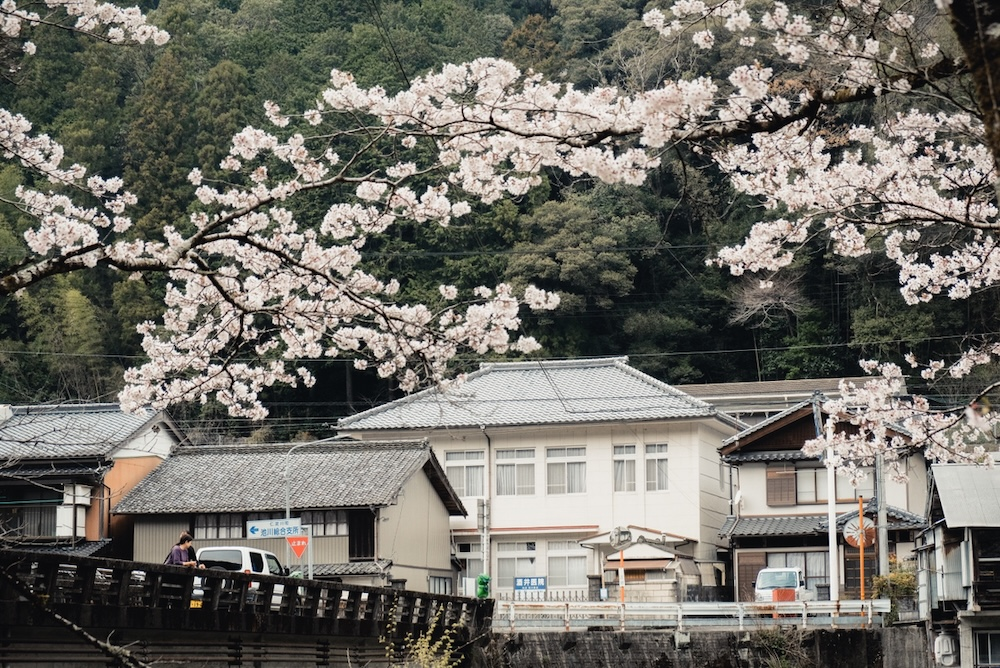
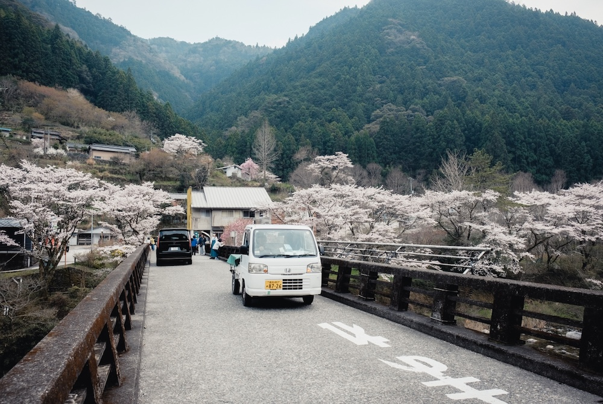
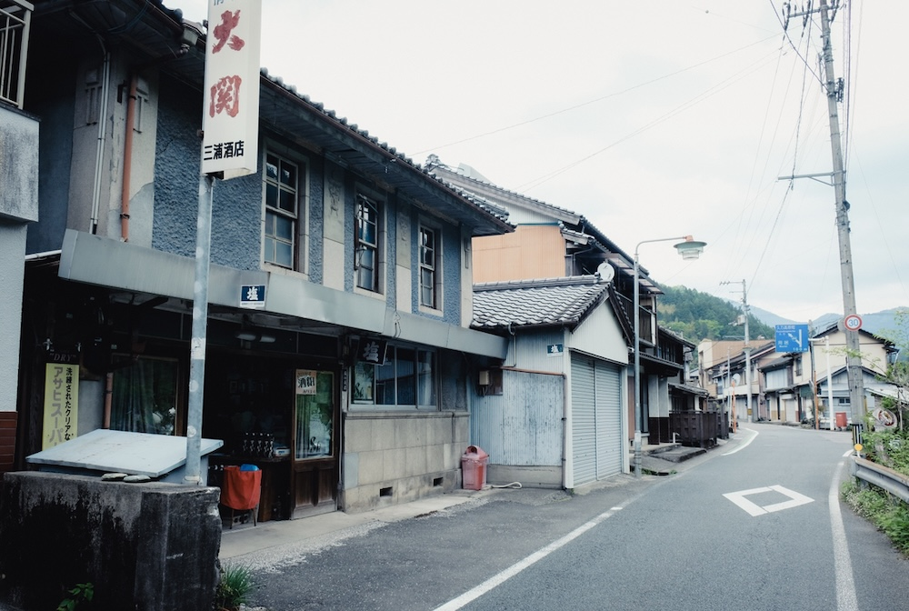
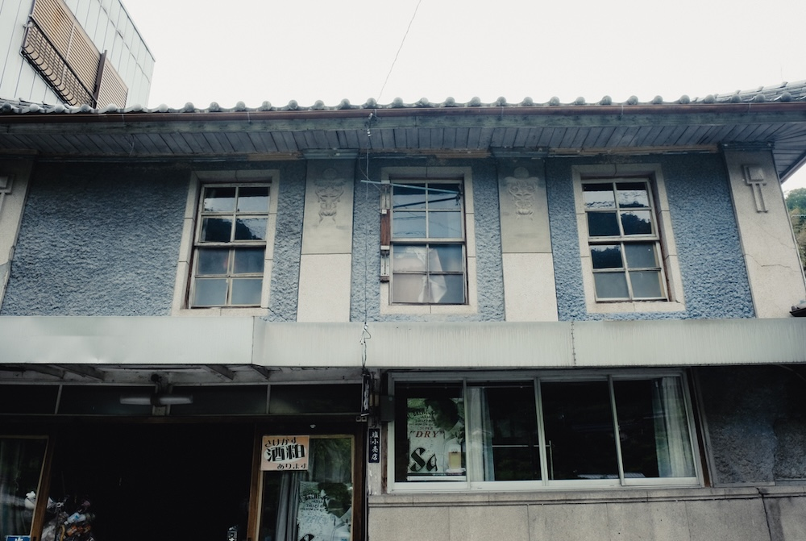
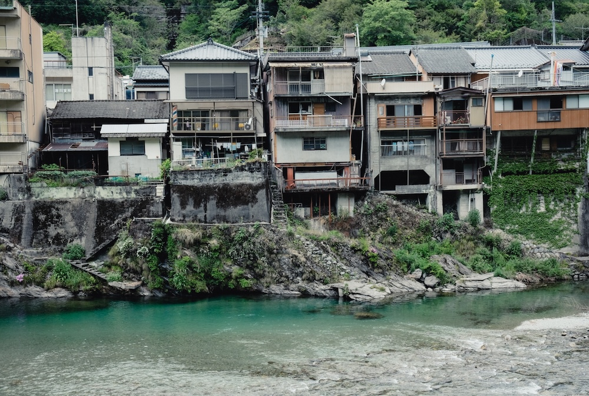

探訪:2025.5, 2026.3 撮影:Fujifilm XT2 四国産地の奥深く、険しい山間部に築かれた茶畑のある集落。仁淀川水系の流れに面して家々が並ぶ風景が優美で、春には桜の名所となり遠方からも観光客が多く訪れる。 川に迫り出すように住宅が建てられ、夏には川辺で子供たちが水遊びをする風景も見られるという。
仁淀川町 佐川の風景 2026.3 撮影


仁淀川町 佐川の風景 2025.5 撮影



▶︎戻る